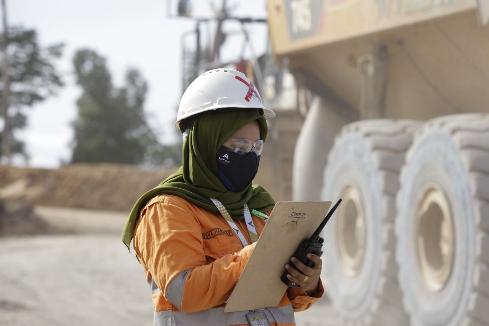
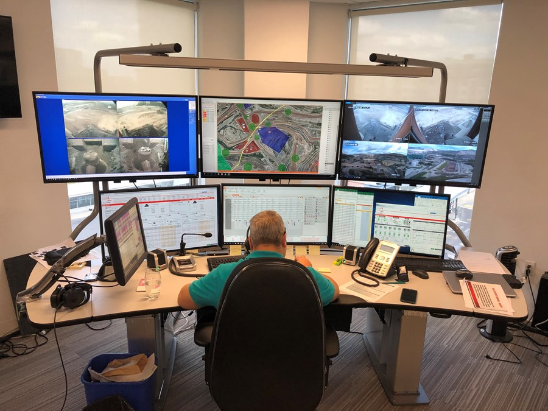

Audit & Dokumentasi K3
Sistem Evaluasi dan Bukti Kinerja K3
Audit dan Dokumentasi adalah kunci untuk memastikan kepatuhan, mengidentifikasi kelemahan, dan mencapai peningkatan berkelanjutan dalam K3.
Jenis Audit K3
Audit adalah pemeriksaan sistematis dan independen terhadap Sistem Manajemen K3 (SMK3) perusahaan untuk menilai kesesuaian dan efektivitas.
- Audit Internal:
- Dilakukan oleh tim K3 perusahaan sendiri (in-house auditor).
- Tujuan: Evaluasi mandiri dan persiapan sebelum audit eksternal.
- Audit Eksternal:
- Dilakukan oleh pihak ketiga bersertifikat atau instansi pemerintah (misalnya, Kemenaker).
- Tujuan: Mendapatkan sertifikasi SMK3 atau membuktikan kepatuhan terhadap peraturan negara.
- Checklist Audit:
- Alat utama yang berisi daftar pertanyaan terperinci untuk memverifikasi kepatuhan terhadap standar K3 dan SOP di lapangan.

Dokumen Pengendalian Sistem (SOP & Formulir)
Dokumentasi yang terstruktur adalah bukti implementasi SMK3, terdiri dari dokumen panduan (SOP) dan dokumen rekaman (Formulir).
- SOP K3 (Standard Operating Procedure):
- Panduan kerja wajib yang merinci langkah-langkah kerja paling aman dan efisien.
- Wajib diperbaharui jika ada perubahan alat, proses, atau regulasi.
- Form Inspeksi:
- Rekaman harian/mingguan yang mencatat temuan kondisi tidak aman (*unsafe condition*) di area kerja.
- Digunakan untuk memantau kemajuan tindakan korektif.
- Form Insiden:
- Dokumen resmi untuk mencatat detail kecelakaan, cedera, atau *near miss* (nyaris celaka).
- Krusial untuk analisis akar masalah (*Root Cause Analysis*) dan mencegah terulang kembali.

Laporan Pelatihan & Kompetensi
Laporan ini membuktikan bahwa karyawan memiliki pengetahuan dan kompetensi yang diperlukan untuk bekerja dengan aman sesuai standar K3.
- Laporan Pelatihan:
- Mencatat partisipasi karyawan, materi yang diberikan, tanggal pelaksanaan, dan hasil evaluasi.
- Meliputi pelatihan dasar (induksi) hingga pelatihan spesifik (misalnya, LOTO, *First Aid*).
- Tujuan Audit:
- Dokumen ini diaudit untuk memastikan bahwa setiap pekerja di area berisiko tinggi telah menerima pelatihan wajib.
- Statistik Kinerja:
- Semua rekaman (inspeksi, insiden) digunakan untuk menghitung indikator kinerja utama seperti *Frequency Rate* (FR) dan *Severity Rate* (SR).